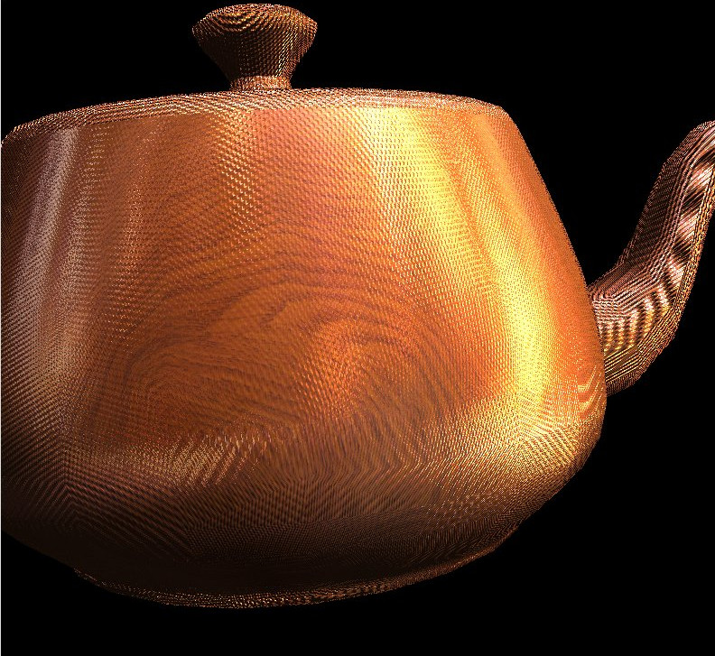
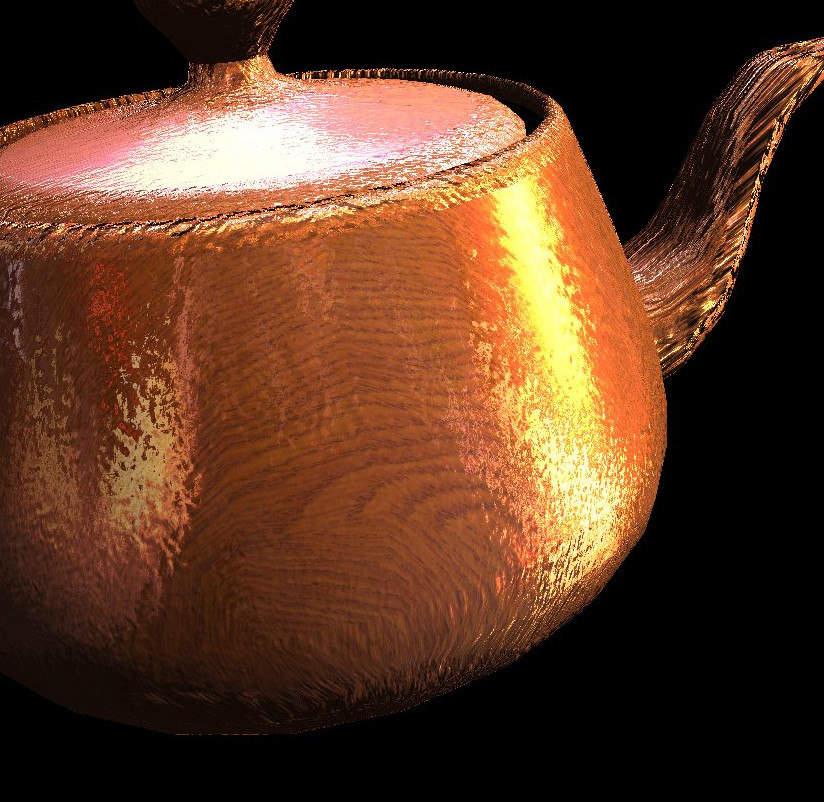
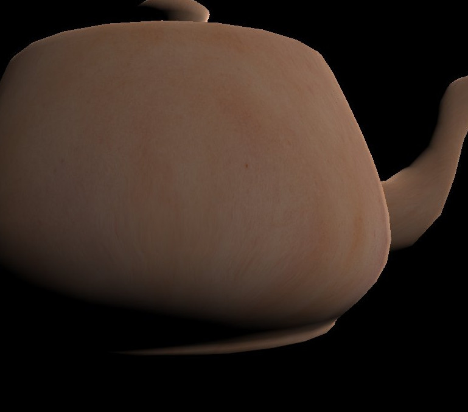
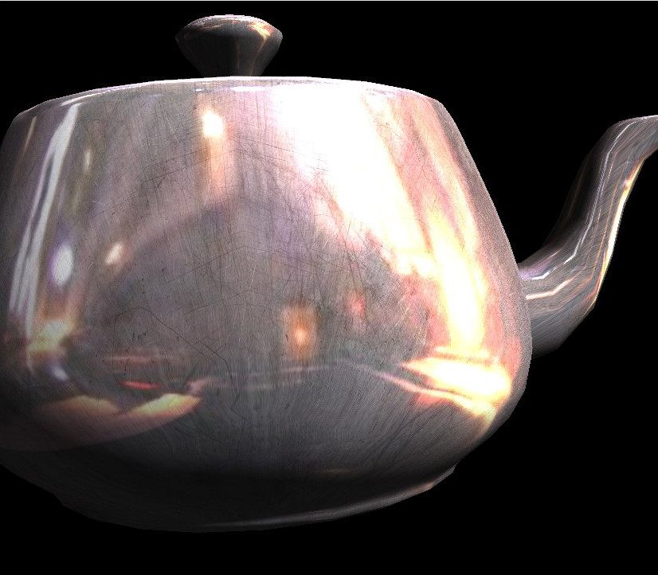
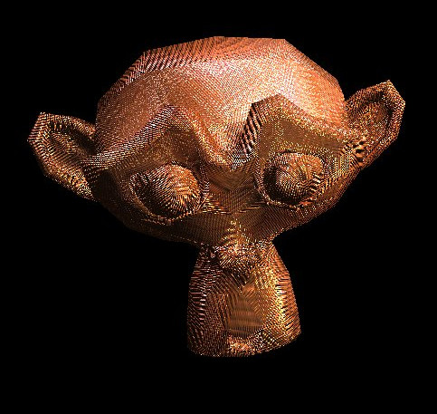

If you’re here to see pretty pictures of teapots, skip to the end.
This blog post is about my submission for the teapot rendering contest for CS418@UIUC. The goal was to render a realistic teapot using various effects. Being a formal methods and functional programming junkie, I searched for a purely functional way to do this in Haskell. What I found was GPipe.
Source code at: https://github.com/mvcisback/typesafe_teapot
Based on the Wiki:
The 2 biggest limitations of GPipe’s are lack of support and missing convenience functions. Specifically, all the transformations, lighting, texturing must be done as shaders. While initially a bit of a hindrance, it ultimately allowed me to move far beyond the capabilities of the fixed pipeline (and with greater understanding).
I ended up implementing both the Phong and Seeliger (seen in the skin textured teapot) lighting models. With texturing, environment mapping, and bump mapping, the teapot is given a variety of looks.
To parse the OBJ I wrote a CFG processed by happy (similar to bison). This allowed me to easily extend the grammar and change the way the data structure returned is presented. ## Testing Cylindrical and Spherical Texturing ## Another benefit of go full out on the parser (for example supporting arbitrary polygon faces) is that I could take output obj’s from blender. Two particularly useful meshes were the Cylinder and the Sphere. These allowed me to easily test the cylindrical and spherical texture mapping (since they don’t get distorted on those shapes).
I’m planning on breaking out a bunch of what I ended up writing for this project (Obj Parser and some of the shaders) into a libraries. First things first though I really want to move from Data.Vec to the linear library by Edward Kmett. It seems (like most of his projects) to offer a very clean and mathematically consistent library. GPipe has a strong integration with Data.Vec, so ideally it’d be changed to linear or factored out.
    